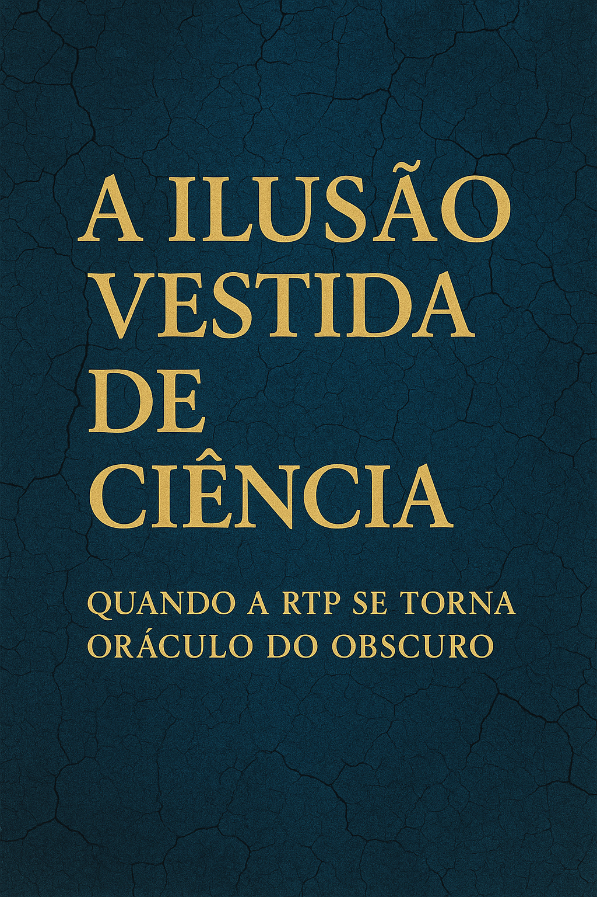

Na vetusta Sala dos Capelos, onde outrora se discutia saber e ciência, celebrou-se esta semana mais uma ópera burlesca da nossa democracia cénica. O Presidente Marcelo, de toga engomada e latim afiado, decidiu agraciar dois figurões europeus com títulos que não pagam pão nem curam variz — mas brilham no peito como medalhas em desfile.
Felipe VI, rei por herança e não por currículo, recebeu um honoris causa pela sua persistência em continuar a existir — o que, na verdade, é o que melhor faz. Ao seu lado, Sergio Mattarella, patriarca da estabilidade italiana, cujo maior feito recente foi… bem, estar presente.
Marcelo, qual bardo imperial renascido, recitou em latim as qualidades celestiais dos seus convivas: dignidade, inteligência, temperança, sentido de missão, visão universal — atributos tão raros nas elites que, ao serem avistados, devem ser imediatamente premiados com um canudo simbólico e um croquete institucional.
Enquanto os doutorandos eram exaltados como luminares do espírito europeu, cá fora, o povo — essa entidade abstrata que só entra nos discursos em vésperas de eleições — procurava lugar nos centros de saúde, remendava salários com esperança vencida e fazia contas ao fim do mês como se fossem provas de doutoramento em matemática do desespero.
É curioso como estas cerimónias são sempre aplaudidas pelos próprios convidados, como se a classe dirigente tivesse criado uma ludoteca da vaidade, onde se premiam entre si, de toga em toga, de citação em citação, sem nunca passarem pela realidade suja dos comboios parados, das escolas sem professores, das urgências fechadas.
Se a Universidade de Coimbra é a “escola das virtudes”, como Marcelo proclamou, então os corredores devem estar cheios de ecos: “Aqui jazem as virtudes — morreram de inanição”.
E assim, entre latim e salamaleques, as eminências medievais eternizam-se em bronze, enquanto o povo se eterniza nas filas.